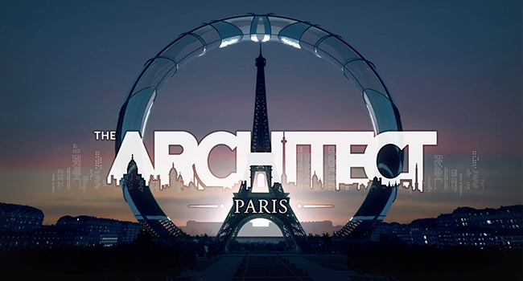
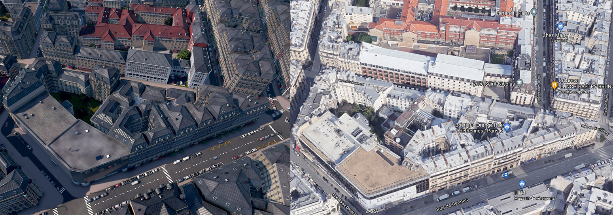
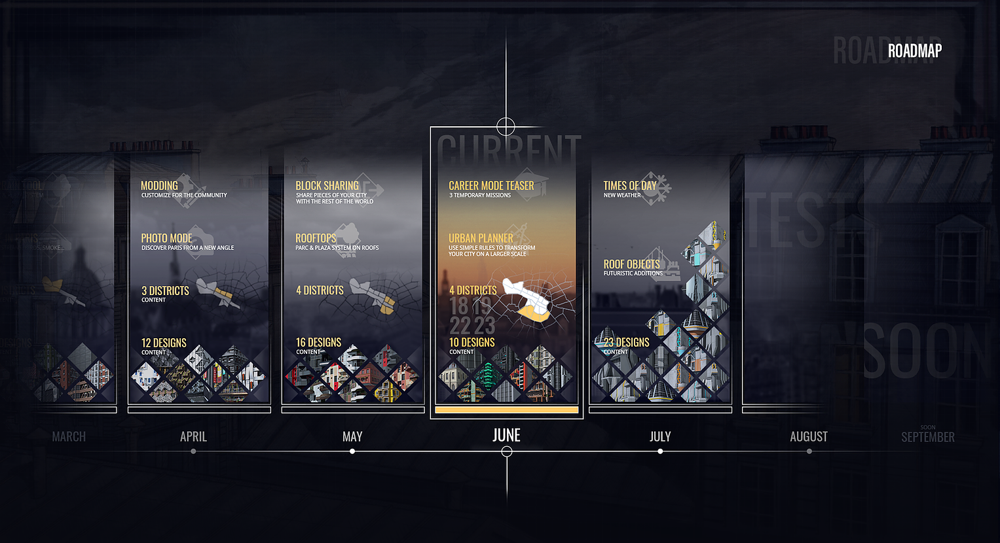

Level Designer on The Architect: Paris

- Project Name
- The Architect: Paris
- Platform
- PC (Steam, EPIC, GOG)
- Role
- Level-Designer
QA-Tester
- Date
- Dec. 2019 - Today
A 1:1 scale procedural game
The Architect: Paris is a construction game that allows you to shape the city of Paris into what you want. Destroy, draw, build your own architectural projects, customizing each building carefully or entire districts at once.
The game include a sandbox mode, an upcoming campaign update and support modding. It's gameplay is a mix of a classic city builder, procedural drawing and creative tool.
This game is powered by Unity and uses procedural generation with ECS to achieve a high level of detail for a map at this scale.
Tasks Overview
Level Design field:
- Level design using 3dsMax, Photoshop, Unity and in-house tools
- Realization of the level design of Paris at 1/1 scale
- Level building
- Reshape of the city layout according to game specification
- Creation and integration of the traffic system
- Integration of data in engine in connection with the team
- Self-testing and feature integration on project
- Additional gameplay loop
- Documentation
Development Test field:
- Manual testing
- PR review
- Mantis Bug Tracker maintenance
- Delivery test
- Test automation
My job as Level Designer
I was in charge of the pre-production, creation and integration of all the map of The Architect: Paris using the assets provided by the artists team and the internal tools of the studio.
City View of Paris using Photo Mode
In order to represent a Paris as close as possible to reality while taking into account the technical constraints, a first inventory of the architectural styles present in the city was made. Together with the team, we decided on the essential components that make up Paris and drew up a reference document.
I then build with Photoshop, 3dsMax, Unity tools and the help of a 3D cartography the shape I wish to give to a group of buildings or the entire district. I enter the data that will be read when the city is generated.

Representing Paris in detail is good, but it is important to avoid a level of detail too high at the risk of degrading the player experience. A block with many plots will require more actions from the player in order to feel its impact done. Moreover, a block with too much detail will put the player off the idea of modifying it, "this block is already pretty, I can't make it better".
Some blocks can follow real world shape while some do not offer an interesting experience for the players.
Hidden Designs
During the development of the game, I was in charge of a gameplay part that didn't see the light of day in the final version of the project.
It consisted of sending an architect to wander the streets of Paris in search of a building with remarkable architecture. The player then had to follow his indications in the city in order to find it, in the manner of an orienteering race. The indications given to the player corresponded to the permanent elements of the city, such as the roads, the landmarks and the compass directions and should give the impression that the architect was moving in a realistic way through the city.
Block shape
Tests allowed me to conceptualize the different rules to follow on the blocks of the project depending on the player approach that we want to encourage, eg: A common line cutting a block into 2 distinct parts is more likely to be the border between the player's creations and the Paris "Vanilla" buildings.
Live Updates
The game was first released in early access with a monthly update system including new content and features, so we had a "classic" production experience as well as a "live" experience.
I had to keep datas up to date along the project's development, some features can change and be added.
Development Tests
Once most of my production was in place, I was able to participate in the development testing effort as needed. This includes delivery testing, PR reviews, editor testing, Mantis Bug Tracker maintenance and test automation using SikuliX.
Our approach was mainly "Grey Box Testing" due to the fact that we were in direct contact with the rest of the team and that I am involved in the production.
The Architect: Paris Announcement Trailer
The Pantheon landmark using Photo Mode